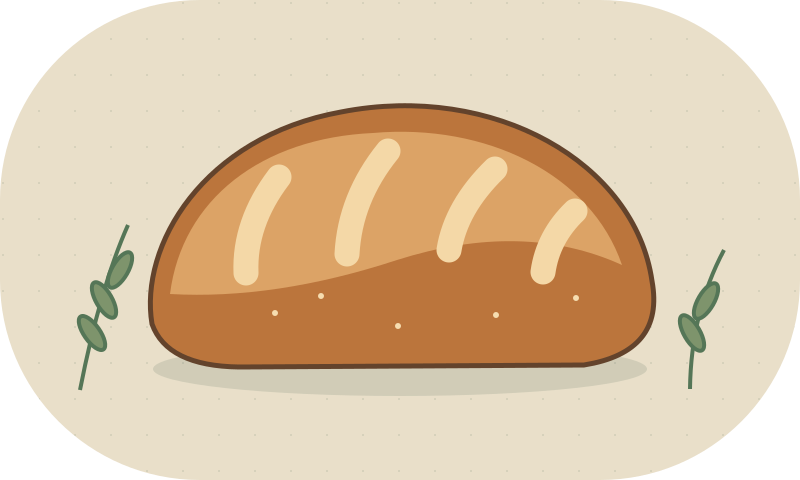

A LITTLE STOP BY VICTORIA PARK
Bread. Bakes.
Bristol mornings.
A neighbourhood bakery on St John’s Lane.
Bread, cakes, savoury pastries — and a coffee along the way.

THE PARK BAKERY
Your neighbourhood
bakery stop.
Just off Victoria Park, the St John’s Lane bakery brings together breads, cakes and savoury favourites.
Pick up something for the table, a sandwich for lunch or a sweet treat to enjoy with coffee. For today’s selection, opening times and special enquiries, contact the bakery directly.
See the bakery on Facebook ↗SOMETHING FOR YOUR DAY
From the bakery counter
A taste of the range described in public bakery listings. Availability changes — please ask the team about today’s bakes and allergens.
Breads
A loaf for the table or something to take home. Ask the bakery about the breads available today.
Cakes & treats
Make room for a little sweetness. Discover the day’s cake selection at the counter.
Savouries & coffee
Savoury pastries, sandwiches and espresso-based coffee for a stop along St John’s Lane.
COME BY ST JOHN’S LANE
Find your way
to the bakery.
94–96 St John’s Lane
Bristol · BS3 5AQ
United Kingdom
Have something in mind?
Get in touch with the bakery for current opening hours, product availability and enquiries.
0117 972 0510theparkbakery@gmail.comFacebook updates ↗This preview does not accept orders or payments. Contact details are drawn from public listings; please confirm arrangements directly with the bakery.